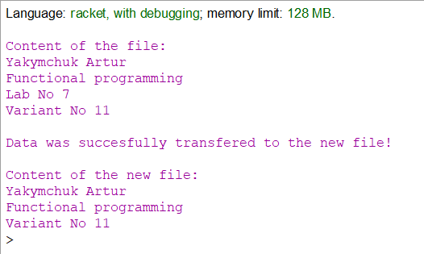

Вибір середовища
Racket — це універсальна багатопарадигмальна мова програмування та мультиплатформенний дистрибутив, який включає мову Racket, компілятор, велику стандартну бібліотеку, IDE, засоби розробки та набір додаткових мов. Мова Racket є сучасним діалектом Lisp і нащадком Scheme. Він створений як платформа для проектування та впровадження мови програмування. На додаток до основної мови Racket, Racket також використовується для позначення сімейства мов програмування та набору інструментів, що підтримують розробку на Racket і з ним. Racket також використовується для створення сценаріїв, навчання інформатиці та досліджень. Racket призначений для розробки програм та мов програмування. Це означає, що з його допомогою можна досліджувати не лише те, як писати програми, а й чому саме так.
Задача
Записати в текстовий файл n рядків тексту, що задаються програмою на функціональній мові програмування. Зчитати рядки із створеного програмою файлу, вивести їх на екран. Видалити в початковому тексті з конкретний текст. Записати в новий текстовий файл результат обробки тексту.
Код програми
#lang racket
(define (writeDataToFile data file) (display-lines-to-file data file #:exists 'replace #:mode 'text))
(define (nextLine file)
(let ((line (read-line file 'any)))
(if (eof-object? line)'()
(begin (displayln line)
(append (list line) (nextLine file))))))
(define path "E:\\Racket\\labs")
(define words (list "Yakymchuk Artur"
"Functional programming"
"Lab No 7"
"Variant No 11"))
(writeDataToFile words ( string-append path "input.txt"))
(display "\nContent of the file:\n")
(define readData (call-with-input-file ( string-append path "input.txt") nextLine))
(define removeData( remove "Lab No 7" (list "Yakymchuk Artur"
"Functional programming"
"Lab No 7"
"Variant No 11")))
(writeDataToFile removeData (string-append path "output.txt"))
(display "\nData was succesfully transfered to the new file!") (newline)
(display "\nContent of the new file:\n")
(define rm-data (call-with-input-file ( string-append path "output.txt") nextLine))
Результати роботи програми
source file link
Висновок
Після проведеної роботи було реалізовано програму, яка зчитує текст з файлів та створює нові з заданим текстом.